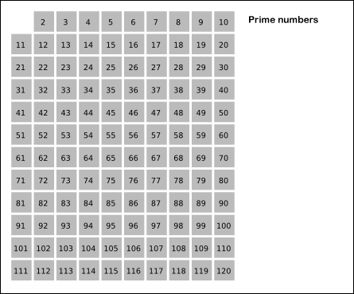
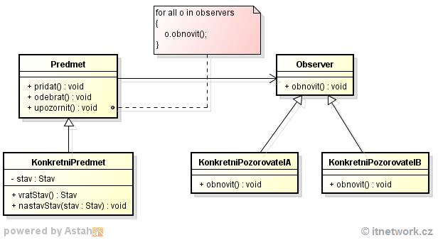

PVA - maturita 2045 - PROKOP SCHOVANEC
Konvence, klíčová slova, datové a výčtové typy, proměnná, konstanta, přetypování, konverze d. typů.
Referenční a hodnotové d. typy. Třídění.
KONVENCE
= dohoda, úmluva, společenské pravidlo, ustálený způsob jednání
— doporučený styl zápisu programu, postupy, metody pro daný prog. jazyk
— adresářová struktura
— komentáře, deklarace, příkazy…
— lepší čitelnost, udržitelnost
— https://github.com/ktaranov/naming-convention/blob/master/C%23%20Coding%20Standards%20and%20Naming%20Conventions.md
— pascal casing (necoProste) / camel casing (ProkopovoClass)
— třídy + fce
— camel casing
— parametry fcí + proměnné
— pascal casing
— iCislicko, strBlabla = ne
— smyslné a vystihující názvy
— _privateVariable
— IMujInterface
— vertikálně zarovnané chlupaté závorky
— pojmenované argumenty fcí pří jejich volání — DoSomethingPlease(hi: „cus“, numero: 54334)
KLÍČOVÁ SLOVA
— identifikátor, specifický a nezaměnitelný význam v prog. jazyce, vyhrazeny
— speciální význam pro kompilátor
— kontextuální klíčová slova
— nejsou vyhrazená
— mají význam pro kompilátor pouze ve specifickém kontextu
DATOVÉ a VÝČTOVÉ TYPY (enums)
— datové typy
— hodnotové — uložené v paměti v nezměněné podobě, přistupujeme k nim přímo — int, decimal…, char, bool
— referenční — speciální zacházení — string (viz c)
— volíme vždy vhodný typ pro požadavky programu
— deklarace a přiřazení (=)
— výčtové typy
— klíčové slovo enum
— návrhový vzor, tvořený konečnou omezenou množinou pojmenovaných hodnot
— celočíselná hodnota, lze ovšem přetypovat (enum Ahoj : long)
— sekvenční přiřazení hodnoty
— přiřazení hodnoty jiného člena výčtu (bacha na cyklení)
PROMĚNNÁ, KONSTANTA
— jazykový konstrukt k ukládání dat všeho druhu
— program nesmí obsahovat proměnné se stejným názvem (výjimky — jisté kontexty toto dovolují, problematické)
— prefix „@“ při používání vyhrazených klíčových slov
— konstanty
— klíčové slovo const
— stejná pravidla, až na to, že narozdíl od proměnných jsou neměnné
— hodnota musí být známá při kompilaci
PŘETYPOVÁNÍ a KONVERZE DATOVÝCH TYPŮ
— c# má statický typový systém — typ proměnné nelze za běhu programu měnit
— při konverzi numerických typů může dojít ke ztrátě přesnosti
— explicitní konverze (casting) — přetypování — děje se z naší vůle
— double cislo = (double)nejakyInteger;
— implicitní konverze — automatická, děje se podle jazykem definovaných pravidel
— double x = 1 + 2.5; // x => 3.5
— Console.WriteLine(myLong); — interní volání long.ToString()
— uživatelsky definované implicitní konverze
— podpůrné třídy
— třída Convert
— Int32.Parse…
REFERENČNÍ a HODNOTOVÉ DATOVÉ TYPY
— stack — zásobník — lokální proměnné, call stack
— rychlý, automatické uvolnění paměti, omezená velikost
— hodnotové d. typy (int, struct, enum), reference na objekty v heapu (haldě)
— heap — halda — objekty, dynamická alokace
— garbage collector
— dynamická velikost
— referenční typy (class, array, string)
— value types
— obsahují přímou hodnotu
— při přiřazení se hodnota kopíruje
— nemohou být null
— reference types
— reference na objekt v heapu
— při přiřazení se hodnota kopíruje
— null
TŘÍDĚNÍ
— (pod)kategorie algoritmů
— řadí prvky listů podle pravidla - podmínky
— numerické, abecední řazení — vzestupně / sestupně
— složitost
— n prvků — O(n)
— řazení výběrem, vkládáním, záměnou, slučováním
— bubble sort — prochází list, sousedící prvky prohodí podle velikosti
— heap sort — postupně vybíráme největší prvky ze zbylých prvků
— quick sortPVA - maturita 2045 - PRAVOMIL LEFTICZ (PL)
Řízení toku programu, definice prvočísla. Algoritmus pro určení prvočísla.
ŘÍZENÍ TOKU PROGRAMU
— if, while, do-while, for, foreach, switch, break, continue, goto, (return?), yield, default, case
— větvení programu — už se nejedná o lineární exekuci příkazů
— asm — podmíněné skoky
— výběr, iterace, skok
— výběr
— podmínka, if, else, … — pracuje s výrazem, který musí navracet True / False (1 nebo 0 prý nejde mno :( )
— switch case — default, break, vybírá na základě vlastnosti kýženého prvku
— iterace
— for, while, foreach, do-while
— opakování bloku kódu, pokud je splněná podmínka
— for(;;)
— foreach - příkaz nebo blok příkazů pro každý prvek v instanci
— musí implementovat IEnumerable
— await foreach — async
— skok
— bezpodmínečné
— break, return, continue, goto
— continue — ukončí aktuální iteraci smyčky
— return — navrací řízení toku volajícímu spolu s hodnotou (nebo bez, nebo ref)
DEFINICE PRVOČÍSLA
— přirozené číslo větší jak 1, které je dělitelné pouze samo sebou a jedničkou — má pouze a jedině dva přirozené dělitele
— složená čísla lze rozložit na součin prvočísel - faktorizace
— je jich nekonečně mnoho (!!!)
ALGORITMUS PRO URČENÍ PRVOČÍSLA
— test prvočíselnosti
— zkusmé dělení — různé úrovně optimalizace
— eratostenovo síto — pomalé, náročné na paměť, hledání v posloupné množině postupným dělením známými prvočísly (2, 3, 5, 7…)
(— Fermatův test (???) — a^p-1 (je kongruentní) 1 (mod p) asi nie )
PVA - maturita léta páně 2045 - ROMAN
Kolekce (List, Dictionary, Stack), frekvenční analýza a její význam pro dešifrování.
KOLEKCE — LIST, DICTIONARY, STACK
— ukládání a správa skupiny souvisejících objektů
— System.Array, System.Span<T>, System.Memory<T>, List<T>, Dictionary<TKey, TValue>
— charakteristika
— přístup — index, klíč
— výkon, efektivita
— dynamičnost — zvětšování, odebírání prvků
— přístup k prvkům pomocí dotazů LINQ
— podobné SQL dotazům
— from x in xCollection where x > 100 select x
— IEnumerable<T>
— obecné
— předkem všech typů je Object
— ArrayList
— při získávání prvků je nutné je přetypovat
— generické
— <T>
— typ můžeme sami specifikovat
— vlastní implementace — můžeme kontrolovat, kdy generický parametr implementuje dané rozhraní (IComparable, IEnumerable)
— LIST
List<int> neco = new List<int>(x); //velikost x, optional
— Add, Remove — dynamický přístup
— Contains, IndexOf, Clear…
— fce pro sorting…
— přístup pomocí indexeru — [x]
— DICTIONARY
Dictionary<TKey, TValue> necoOpet = new Dictionary<TKey, TValue>();
— ukládání podle klíče a hodnoty — velmi rychlé vyhledávání — O(n) — hashtable
— !!! duplicitní klíče — ArgumentException
— Add, TryGetValue, Remove, ContainsKey, ContainsValue…
foreach( KeyValuePair<string, string> kvp in myDictionary )
{
Console.WriteLine("Key = {0}, Value = {1}", kvp.Key, kvp.Value);
}
— STACK
Stack<int> mujStackOuje = new Stack<int>();
— LIFO — last in first out
— Push, Pop, Peek, Contains, Count…
— inicializace s kolekcí Array
— implementován jako pole
— duplicitní prvky, null prvky
— Queue<T>
FREKVENČNÍ ANALÝZA a JEJÍ VÝZNAM PRO DEŠIFROVÁNÍ
— nástroj kryptoanalýzy
— pomáhá nám se dopracovat k otevřenému textu pomocí statistiky a znalostí přirozeného jazyka
— četnost písmen / četnost kombinací písmen
— substituční / transpoziční šifry
— bruteforce
— (populární literatura — E. A. Poe — Zlatý Brouk)
PVA - maturita léta páně 2045 - PROKOP SCHOVANEC
Řetězcové funkce, specifika typu string. Operace v zásobníku a na haldě.
ŘETĚZCOVÉ FUNKCE a SPECIFIKA TYPU STRING
— String — sekvence znaků (char), uložená na určité adrese v paměti (heapu/haldě)
— unicode (ne ASCII)
— string literals, raw string litereals (tři uvozovací znaky)
— escapce characters, escaping
string zdurKamo = „zdravím můj drahý příteli. toť jaké nevšední počasí nám dnes nastalo, že!?“;
— immutable — neměnitelný — je nutné použít StringBuilder
— se stringem lze zacházet jako s polem
— String.Empty / null string
string neco = „pavel byl jakoze:\“dyk more co to meles\““;
— sčítání, x.ToString(), Equals(), ==, CompareTo(), ToUpper(), ToLower(), IndexOf()
— Substring(from, len)
— Split(char[] separators) — vrací pole stringů
— StringSplitOptions.RemoveEmptyEntries
— Replace()
— každý objekt v .NET implementuje ToString() — vrací řetězcovou reprezentaci
— automaticky volána při Console.WriteLine()
— String.Format
— formátovací string s parametry „placeholders“ — interoplovaný string
— ${0}…{1}…{2}, int, string, neco…
— StringBuilder
StringBuilder sb = new SringBuilder(„sdsdf“, capacity);
— Append(), AppendFormat(), Insert(), Remove(), Replace()
OPERACE V ZÁSOBNÍKU A NA HALDĚ
— CommonLanguageRuntime
— zásobník obsahuje hodnotové datové typy a adresy (pointery) na referenční datové typy uložené na haldě
— „function stack“ — proměnné inicializované v kontextu fce jsou po jejím navrácení automaticky uvolněny
— volání fcí
— parametry jsou vloženy do zásobníku (v obráceném pořadí)
— uložení návratové adresy
— nový zásobníkový rámec pro metodu
— návrat z fce
— managed heap, udržuje pointer na další lokaci v paměti, kde bude alokován nějaký další objekt
— garbage collector — uvolní nedosažitelné objekty a zarovná haldu
— stackalloc
PVA - maturita léta páně 2045 - LUBOMÍR PLAKAL
Regulární výrazy, použití pro validaci polí a pro vyhledávání informací v dlouhých nestrukturovaných datech.
REGULÁRNÍ VÝRAZY
— regex
— filtrování textu — dat, podle pravidla (vzoru)
— regex101.com
— C# — System.Text.RegularExoressions
Regex rg = new Regex(regualrExpressionString);
— IsMatch(), Match*, Matches**, Replace…
— Count
— GetGroupNames / Numbers
— Split
string pattern = @"d \w+ \s";
string input = "Dogs are decidedly good pets.";
RegexOptions options = RegexOptions.IgnoreCase | RegexOptions.IgnorePatternWhitespace;
foreach (Match match in Regex.Matches(input, pattern, options))
Console.WriteLine($"'{match.Value}// found at index {match.Index}.");
// The example displays the following output:
// 'Dogs // found at index 0.
// 'decidedly // found at index 9.
— dfsdfg
PRAVIDLA REGEXU
— viz. https://www.regularnivyrazy.info/download/regularni-vyrazy-prehled.pdf nebo zde ve složce regularni-vyrazy-prehled.pdf
—————————————————————————
* vrací Match
** vrací MatchCollection
Extrakce HTML Tagů — (?<tag_start><\S+?>)(?:(?<tag_content>.*)(?<tag_end><\/\S+>))?|(?<tag_content>.*)
Validace hesel — https://regex101.com/r/fX8dY0/1
PVA - maturita léta páně 2045 - CENAVOHCS POKORP
Práce s textovými soubory, zpracování velkých textových souborů.
PRÁCE S TEXTOVÝMI SOUBORY
— System.IO
— Directory, Path, File StreamReader, StreamWriter
— verbatim string literal — @„\Program Files\…“
— relativní / absolutní cesta
— File
— uspořádaná, pojmenovaná kolekce záznamů — data, která spolu souvisejí
— přípona
— sekvenční přístup — text
— náhodný přístup — záznamy, ne-sekvenční přístup k datům
— Create, Change, Open, Read, Write, Close
— hierarchie
— File, Directory, Path — zapisování / čtení na jeden zátah, práce se souborovým systémem
— Stream
— sekvence bitů, ze které čteme, nebo zapisujeme
— různá úložiště — síť, raměť, paměť, File
— StreamReader
— čtení po znacích/řádcích
StreamReader sdfssdlfjk = new StreamReader(nazevSouboru);
— Read — vrací další znak nebo -1
— ReadLine — vrací řádek
— Peek — vrací další znak nebo -1, nezmění stav
— StreamWriter
StreamWriter sw = new StreamWriter(cesta, bool append);
— Write — char
— WriteLine — string
— Close — zavře aktuální stream, uvolní sys. zdroje
— při inicializaci uvnitř using se toto děje automaticky
— Dispose
using (var fsRead = new StreamReader (pathToSlovo))
{
…
}
// fsRead.Dispose není nutné volat, ani když dojde
// k výjimce při čtení ze StreamReader
— Flush
— File
— Exists — path —> bool
— ReadAllLines — path —> string[]
— ReadAllText — path —> string
— Delete
— Directory
— GetCurrentDirectory —> string — pwd
— SetCurrentDirectory — path
— DirectoryInfo
DirectoryInfo ksdfhksdjfh = new DirectoryInfo(path);
— vytvoří všechny adresáře na cestě
— vlastnosti — Parent, Root, CreationTime, Name
— Path
— Combine — path1 + path2
— GetDirectoryName —> path1 - filename
— GetTempPath
— GetTempFileName — vytvoří dočasný soubor na disku a vrací cestu k němu
FILESTREAM
— náhodný přístup
— zapisování, čtení, otevírání, zavírání souborů v souborovém systému — umožňuje r a w po bytech nebo polích bytů
FileStream fssss = new FileStream(string cesta, FileMod mod);
— mod — enum — způsob, jakým se bude přistupovat k souboru
— Append, Create, CreateNew, Open, Truncate
— Seek — pohyb po streamu
long Seek(long pozice, SeekOrigin pocatek); //SeekOrigin + pozice
— SeekOrigin — enum — Begin, Current, End
— WriteByte, ReadByte
— BinaryWriter
— vstup — filestream (nebo stream obecně)
using (FileStream fs = new FileStream ("BigIntArr.dat", FileMode.Create))
{
using (BinaryWriter bw = new BinaryWriter (fs))
{
int SIZE = 2000;
// tady se bude zapisovat Int32 a potom string
bw.Write (SIZE);
bw.Write ("Záložní úložiště pro naše pole.");
}
}
— Write — overload pro běžné typy
— vlastnost BaseStream — odkazuje na stream, ze kterého byte stream pochází
— BinaryReader
— …
— ReadString, ReadInt32, ReadDecimal …
SERIALIZACE
— převedení objektu do transportovatelné / přenositelné podoby — json, xml
— BinaryFormatter — obsolete
PVA - maturita léta páně 2045 - LUBOMÍR PLAKAL
Metody (předávání argumentů odkazem a hodnotou), rozsah platnosti proměnných v
metodách. Specifikátory dostupnosti.
METODY
— funkce — pojmenovaný blok kódu, který lze opakovaně spouštět s variabilními parametry
— refaktoring
— povinné parametry při definici fce
— modifikátor přístupnosti
— (static)
— návratový typ
— název — konvence
— seznam předávaných argumentů
— volání — návrat
— obecné parametry — konkrétní parametry
— předávání argumentů
— hodnotou
— hodnota se kopíruje
— volání metody s proměnnou ji nijak neovlivní
— referencí
— ref
— hodnota se předává její adresou
— out
— metoda hodnotu předané proměnné přiřazuje (nelze je ji před tím použít)
— přetěžování metod (overloading)
— v jedné třídě může být více fcí se stejným jménem, pokud se liší typem nebo druhem předávaných parametrů
static int Neco(ref string blablabla);
static int Neco(string blablabla);
static double Neco(int sdfsdf);
— rozsahy platnosti
— vnořené bloky / souběžné
— fce tvoří vlastní rozsah platnosti
— proměnná nenalezena v bloku fce — kompilátor ji hledá v bloku nadřazeném
— implicitní hodnoty — „výchozí“ hodnota argumentu
string MwuahSendingLove(string towhom = „nobody“);
Console.WriteLine(MwuahSendingLove()); //sending love to nobody
— pojmenované argumenty
bool Porovnej(int a, int b);
Porovnej(a: 2, b: 34); //validní
Porovnej(b: 1, a: 1); //validní
Porovnej(b: 35, 34); //xxxx
MODIFIKÁTORY PŘÍSTUPU
— specifikátory dostupnosti
— public —
— private — přístup má pouze deklarovaný kód ve stejné třídě nebo struktuře
— protected — přístup má pouze kód ve stejné třídě nebo v odvozené třídě
— internal — přístup má pouze kód ve stejném sestavení
— protected internal — přístup má kód ve stejném sestavení nebo v odvozené třídě v jiném sestavení
— private protected — pouze stejná třída, odvozená třída, stejné sestacvení
— file — stejný zdrojový soubor
PVA - maturita léta páně 2045 - LUBOMÍR PLAKAL
Třídy, konstruktor, dědičnost. Polymorfismus. Side effects
čtyři andělé strážní objektově orientovaného programování
—
anděl abstrakce — se třídami lze pracovat skrze interface, aniž bychom znali vnitřní fungování
anděl zapouzdření — možnost ukrýt implementační detaily a vytvoření interface pro práci se třídou
anděl dědičnosti — třídy mohou dědit chování a charakteristiky
anděl polymorfismu — umožňuje pracovat s podtřídami stejně jako s jejich rodiči (třídy tvořené zákl. třídami)
—
TŘÍDY, KONSTRUKTOR, DĚDIČNOST
— zásadní pro OOP
— třída je šablona pro vytváření objektů — instancí třídy
— třída Objekt
(— UML — unified modelling language — oop obecně)
— nový datový typ — charakterizován daty (proměnné…), chováním (metody)
— referenční — alokován na haldě, dealokace, GC
— dědičnost — třída přebírá vlastnosti, lze dědit pouze z jedné třídy zděděné chování lze přepisovat — hierarchie tříd
— konstruktor
— předpis událostí, který proběhne při vytváření instance třídy
— řeší přístup k privátním elementům třídy při inicializaci
— nemá návratovou hodnotu, jmenuje se stejně jako třída
class Human
{
public string name;
public DateTime;
public Human(string name)
{
this.name = name;
birthDay = DateTime.Now;
}
}
— keyword base — odkazuje na třídu, ze které aktuální třída dědí
— využití v konstruktoru — public Neco(int size, string name, int maxSize) : base (size, name)
— v tomto případě base zastupuje volání konstruktoru
— statické konstruktory
— keyword this — odkazuje na aktuální instanci třídy
— stejná jména členů
public class Employee
{
private string alias;
private string name;
public Employee(string name, string alias)
{
// Use this to qualify the members of the class
// instead of the constructor parameters.
this.name = name;
this.alias = alias;
}
}
— SomeFunc(this) — předávání parametrů
— IS-A, HAS-A
POLYMORFISMUS
— mnohotvarost
— viz. čtyři andělé strážní objektově orientovaného programování
„Umožňuje deklarovat proměnnou obecného typu a přiřadit do ní referenci na speciální datový typ.
Program je potom schopen podle skutečného typu proměnné rozlišit v hierarchii tříd,
kterou jeho metodu má zavolat. „
— klíčová slova virtual a override
— virtual — metoda, u které se předpokládá, že její chování bude přepsáno potomky třídy, které náleží
— override — metoda, která přepisuje virtuální metodu ze třídy, ze které tato třída dědí
— jiný typ — stejná funkce — polymorfismus umožňuje tuto funkce volat nezávisle na typu
— příklady viz. https://moodle.ssps.cz/mod/book/view.php?id=1464&chapterid=273
SIDE EFFECTS
— situace, kdy volaná fce nebo výpočetní výraz mění i jiný stav procesu, než je návratová hodnota nebo změna parametru odkazovaného přes referenci (pointer)
— např.: modifikace ne-lokální proměnné, I/O, modifikace statické lokální proměnné…
— zdrojem je často chybný úsudek programátora, ovšem lze i připustit úmyslné vedlejší účinky — procedurální programování
— funkční programování toto eliminuje — monads
//c side effects
int neco = 0;
void fn()
{
neco++;
}
fn_second(neco++, neco);
void Print(char* string){ printf(„%s“, string); } //má efekt na „vnější svět“
———————————————————————————————
PVA - maturita léta páně 2045 - LUBOMÍR PLAKAL
Abstraktní třídy, interface, implementace interface, porovnání abstraktní třídy a
interface. Přetypování a kontrola typů.
ABSTRAKTNÍ TŘÍDA
— keyword abstract
— základ dědění pro ostatní třídy — má metody bez implementace a tu vyžaduje u dědiců
— z principu nemůže mít instanci
— některé metody lze v abs. třídě implementovat, ty se potom dědí
— !! override !!
— abs. třída může dědit z „klasické“ třídy — override původní funkcionality
— příklad viz. moodle
INTERFACE
— rozhraní
— konvence „IThrowable“ — „public class Dog : IThrowable“…
— speciální typ — „kontrakt“ pro třídy / struktury — určuje, jaké metody mají být implementovány, ale ne jak
— co umí / jak to dělá — IMPLEMENTS_A (HAS_A…)
— členové implicitně public
— třída může implementovat více interface
— polymorfismus
— kolekce tříd, které něco implementují
— le example — https://moodle.ssps.cz/mod/book/view.php?id=1464&chapterid=276
— c# obsahuje mnoho předem definovaných interface
— generický interface
— třída, implementující interface, který dědí z jiného interface, musí implementovat všechny náležitosti
ABSTRAKTNÍ TŘÍDA VS INTERFACE
— abs. třd. — výchozí implementace fcí (od c# 8.0 lze i u interfaců)
— základní blok pro hierarchii / arbitrární vlastnost (může združovat)
KONTROLA TYPŮ / PŘETYPOVÁNÍ
— operátory — is, as, typeof — kontrola, zdali je typ kompatibilní s x, explicitní převod na jiný typ, System.Type pro daný typ
— is
— výraz E is T
— true / false
— vrací true pokud — lze typ převést na T
— typ je odvozený, dědí, implementuje… T
— …
— as
— explicitní převod — E as T
— vrací null, nikoliv výjimku
— ( … )necoVariable;
— typeof
— …
— pouze aktuální typ, nikoliv počáteční třída
————————————————————————————————PVA - maturita léta páně 2045 - LUBOMÍR KAKAL
Funkce jako typ, anonymní funkce. Inversion of control.
FUNKCE JAKO TYP
— delegate
— odkaz na metodu s konkrétní návratovou hodnotou a parametry — lze poté dosadit jakoukoliv metodu, která toto splňuje
— samostatná proměnná / parametr fce
public delegate int PerformCalculation(int x, int y);
— např.: https://moodle.ssps.cz/mod/book/view.php?id=1464&chapterid=278
— callback
— můžeme vytvořit instanci delegáta — objekt — a přiřadit mu hodnotu (metodu)
— multicasting — „+=„ na instanci delegáta — po zavolání volá všechny delegáty
— event —> realizuje notification —> objekty mohou odebírat a reagovat
— možný přenos dat
— loose coupling — objekty jsou propojené pouze událostmi
— vytváření událostí — delegáti
— povinné parametry při vyslání události:
— this — sebe sama
— EventArgs — děděním, může pozměnit
public class Metronome{
public event TickHandler Tick;
public delegate void TickHandler(Metronome m, TimeOfTick e);
public void Start (){
while (true) {
System.Threading.Thread.Sleep (2000);
if (Tick != null) {
TimeOfTick TOT = new TimeOfTick ();
TOT.Time = DateTime.Now;
Tick (this, TOT);
}}}
}
— listener — subscribe — navěšení vlastní obslužné metody na událost
public class Listener{
public int ListID { set; get; }
public Listener (int ID) { ListID = ID; }
public void Subscribe(Metronome m){
m.Tick += new Metronome.TickHandler(HeardIt);
}
private void HeardIt(Metronome m, TimeOfTick e){
System.Console.WriteLine("{0} HEARD IT AT {1}", ListID, e.Time);
}
}
— https://moodle.ssps.cz/mod/book/view.php?id=1464&chapterid=280
ANONYMNÍ FUNKCE a LAMBDA FUNKCE
— funkce beze jména — stále splňuje definici funkce — opakovatelný blok kódu s variabilními vstupními hodnotami
— využíváme výrazů lambda o vytvoření anonymních fcí
— =>
(vstupni_parametry) => výraz
… => { sekvence_vyrazu }
— lze je přiřadit k delegátovi
// Using anonymous method as event handler
btn.OnClick += delegate ()
{
Console.WriteLine("Button was clicked!");
};
— převod na generický delegát
Func<int, int> square = x => x * x;
Console.WriteLine(square(5));
// Output:
// 25
…
Func<int, int, bool> testForEquality = (x, y) => x == y;
INVERSION OF CONTROL
—> návrhový princip —> dependency injection — návrhový vzor
— odstranění závislostí — objekt je nevytváří / nehledá — jsou mu předány
— viz. https://moodle.ssps.cz/mod/book/view.php?id=787&chapterid=162
— „A volá B skrze abstrakci (interface), kterou B implementuje“ —> B za běhu nezávisí na A, ale na interface, který implementuje — A řídí B skrze interface — interface lze snadno vyměnit — tradá modularita
PVA - maturita léta páně 2045 - LUBOMÍR PLAKAL
Symetrické šifrování, jeho výhody a nevýhody. Použití kryptovacích knihoven.
SYMETRICKÉ ŠIFROVÁNÍ
— k šifrování i dešifrování používá stejný klíč — nutno zajistit bezpečný přenos klíče mezi entitami
— časté kombinování — klíč se zašifruje veřejným kl. asym. šifry…
— nízká výpočetní náročnost
— „náhodné“ generování klíčů
— proudové
— vstupní text je zpracováván po bitech
— RC4, FISH
— blokové
— vstup je rozdělen na bloky o velikost x, poslední je doplněn
— AES, DES…
— bezpečnost
— útočník může znát vstup, výstup, klíč… — snaží se odvodit zbylé části
— kryptoanalýza
— side-channel attack
— bruteforce
— transport klíče? — diffie—hellman
— RC4
— HTTPS (SSL / TLS), WiFi (WPA / WEP)
— princip
— jest generován náhodný proud bajtů
— XOR operace se vstupem
— modulo — pseudonáhodný klíč
— AES
— https://www.youtube.com/watch?v=O4xNJsjtN6E
— rijndael algorithm
— častá hardwarová implementace
— princip
— 128 bitový blok dat (nebo 198, 256)
— stav — mřížka 4x4 bytů bloku (column major)
— expanze klíče — odvozování více klíčů ze vstupního klíče
— AddRoundKey — stav šifry je byte po bytu zkombinován s rundovním klíčem pomocí logické operace xor
— SubBytes — pomocí předem definované tabulky je každý byte nahrazen
— ShiftRows — každý jeden řádek stavu šifry se posune doleva o nula bytů, jeden byte, dva, tři
— MixColumns — pomocí předem definovaných matematických operací (pro každou položku ve sloupci) se vypočítá nový stav (omezená velikost jednoho bytu — finite field arithmetics)
— šifrování rundovním klíčem
— …
— 9, 11, 13 rund, poté finální runda — pouze SubBytes, ShiftRows, AddRoundKey —> 10, 12 nebo 14 rund celkově
— operační režim — AES-GCM — umožňuje bezpečně šifrovat data delší než 128 bitů
— galois counter mode — counter mód + tag („checksum“ / „hash“)
POUŽITÍ KRYPTOVACÍCH KNIHOVEN
— System.Security.Cryptography — šifrování / dešifrování, checksum, hashování, pseudonáhodná čísla
— AES v c#
— blok using (AES implementuje IDisposable)
— .Mode .Key .GenerateIV…
— vytvoření enkryptoru — .TransformFinalBlock() —> byte[]
— dešifrování — vytvoření dekryptoru — .TransfromFinalBlock() —> byte[] —> Encoding.GetEncoding(„UTF-16“).GetString()
PVA - maturita léta páně 2045 - LUBOMÍR PLAKAL
Smysl autentizace, hashování, použití hashování při autentizaci. Použití kryptovacích knihoven.
SMYSL AUTENTIKACE, HASHOVÁNÍ
— ověření proklamované identity subjektu
—> autorizace (umožnění provedení dané operace subjektem)
—> autenticita (vlastnost subjektu — jeho pravost)
— ověření identity uživatele, integrity zprávy, původce zprávy
— vícefaktorová
— informační bezpečnost
— CIA(N) = Confidentiality, Integrity, Authentication, Non-repudation
— z otázky deváté:
„— hashovací fce
— MD5
— SHA-2 — standart pro většinu aplikací
— podmínky — (skoro) jednosměrné funkce, nedochází ke kolizím, mezi vstupem a výstupem je minimální korelace, rozdílné délky vstupů poskytují výstup vždy o stejné délce
— blokový přístup
— ukládání hesel — bcrypt, scrypt
— salting — před hashováním je ke vstupu přidán náhodný text — nelze použít rainbow tables (předpočítané hodnoty)
— malware
— integrita dat“
— checksum — kolize
— MD5 — message digest
— 128b hash
— náchylný ke kolizím
— SHA-1 — secure hash algorithm
— SHA256, SHA354, SHA512
— v c#
— byte[] data = Encoding.GetEncoding(„UTF-16“).GetBytes(dataNejaky) —> byte[] res = sha.ComputeHash(data)
— implementace autentizace heslem s pomocí hashování a sole viz. ./src/program_hash_pass_sul.cs
— HMAC
— hash-based message authentication code
— integrita + autentikace
— hash šifrovaný sdíleným klíčem
//implementace v c#
HMACSHA256 hmac = new HMACSHA256(key);
byte[] msg = … //convert string to bytes
byte[] res = hmac.ComputeHash(msg);
—————————————————————————————
https://moodle.ssps.cz/pluginfile.php/6795/mod_book/chapter/305/Base64Encoding.pdf
https://moodle.ssps.cz/pluginfile.php/6795/mod_book/chapter/304/InterakceRSAaAES.pdf
PVA - maturita léta páně 2045 - LUBOMÍR PLAKAL
Steganografie a ukrývání informací. Příklady užití, ukládání citlivých informací.
STEGANOGRAFIE
— ukrývání informací
— předem domluvený postup dešifrování
— lingvistická steganografie / technická steganografie
— tech. st.
— uschování do souboru — obrázku
— nahradíme byte reprezentující jednu složku barvy za byte odpovídající znaku ve zprávě
— uchováme délku zprávy v poslední barvě obrázku
— obrázek v obrázku
— ochrana díla — autorské právo
— strings — linux
PŘÍKLADY UŽITÍ
— komunikace pro utajené služby, armádu
— malware
— distribuovaná steganografie
— exfiltrace chráněných dokumentůPVA - maturita 2045 - LUBOMÍR PLAKAL
Algoritmizace. Třída Program a význam statické metody, vstup programu. Numerické
literály. Césarova šifra.
ALGORITMIZACE
„Algoritmem rozumíme posloupnost konečného počtu přesně definovaných kroků potřebných k dosažení určitého výsledku či vyřešení určité úlohy“
— přesný návod, jak vyřešit danou úlohu
— teoretický zápis / konkrétní implementace
— požadavky
— elementárnost
— konečnost — musí vrátit výsledek v konečném počtu kroků
— obecnost — univerzální, musí počítat s proměnlivým vstupem a reagovat na něj odpovídajícím způsobem
— determinovanost — stejná data, stejné podmínky, stejný výsledek (jednoznačnost výsledku)
— determinismus — každý krok musí být jednoznačně definován, musí být zřejmé, co provádí (to self: programovací jazyk, kde se dá mlžit)
— výstup — měl by mít výstup, který bude možné považovat za řešení pro vstupní data
— zápis algoritmu
— vývojový diagram
— pseudokód
TŘÍDA PROGRAM a VSTUP PROGRAMU
— třída „program“ spolu s metodou „main“ tvoří vstupní část programu (platný c# kód je nemusí obsahovat, kompilátor vygeneruje)
— třída main
— statická, není třeba vytvářet instanci „Program“
— void / int (jako c)
— argument „string[]“ — array argumentů z konzole, dobrovolné
SLOVÍČKO STATIC
— například funkce main
— statické funkce nejsou asociované s instancemi — nepatří konkrétnímu objektu, ale typu (funkce Main patří typu Program)
— statická třída
— obsahuje pouze statické funkce
— nelze vytvořit její instanci
— public static int x = 10; — bude existovat jediná instance
NUMERICKÉ LITERÁLY
0, 7, 765.67f, 890e-7
— doslovný, není to proměnná
— deklarace, výpočty, konstanty (ne konstantní proměnné)
— specifická velikost, signed / unsigned
— int
— double — nepřesný, zlatá střední cesta
— decimal — přípona „m/M“, jinak error — kompilátor si myslí, že se snažíme typu decimal narvat double — nejpomalejší
— float — přípona „f/F“, nejrychlejší, nejméně přesný
— specifikátory literálů — implicitní konverze (m, d, F, L…)
— 0x0, 0b0
— separátor „_“
CÉSAROVA ŠIFRA
— substituční šifra, ROT 13
— množina znaků je nahrazena jinou množinou
— klíčem je posun v abecedě (klíč = 3) — z A se stává D
— nebezpečná, můžeme provést frekvenční analýzu a odhalit klíč (posun)
— vigenérova šifra — 26 abeced, bezpečnějšíPVA - maturita 2045 - KRASOMIL ŠOUREK
Druhy operátorů, snižování a zvyšování hodnoty proměnných, složené přiřazení.
Vigenérova šifra.
DRUHY OPERÁTORŮ
— symboly, specifikují typ předem definované operace, která se na výrazu provede
— aritmetické operátory — ++ --
— logické operátory — || && ! ^
— binární operátory — | & >> << ~
— srovnávací operátory
— přiřazovací operátory — += -= /= >>=
— spojovací operátory
— převodní operátory — as, is, typeof, (T)
— ostatní — [], new, ., ?,
— binární (dvoučlenné)
— běžné matematické operace
— porovnávání, logické operace
—
— unární (jednočlenné)
— ++, --, !…
— ternární
— ?:
— overloading u vlastních typů (klíčové slovo operator)
— asociativita
— pokud mají operátory stejnou prioritu — pořadí určuje asociativita — zleva doprava — všechny binární
— zprava doleva — přiřazení, ternary operátor (x>10 ? ifTrue : ifFalse)
— výrazy — posloupnost jednoho nebo více operandů a jednoho nebo více operátorů, které mohou být vyhodnoceny jako jedna hodnota, objekt, nebo metoda
— výsledek int, bool…
— kolize typů - implicitní konverze!!!
— casting výsledku výrazů
SNIŽOVÁNÍ a ZVYŠOVÁNÍ HODNOTY PROMĚNNÝCH
— přiřazovací operátory, aritmetické operátory
— daný typ musí tuto operaci podporovat
x = x + 1;
x += 1; //složené přiřazení
x++;
…
SLOŽENÉ PŘIŘAZENÍ
— přiřazení hodnoty s dalším operátorem
x op= y
x = x op y
VIGENÉROVA ŠIFRA
— symetrická, polyalfabetická, substituční
— Leon Battista Alberti — 1467, v 19. stol. nesprávně přiřazena Blaisi de Vigenérovi
— původně pouze dvě šifrové abecedy — text se šifroval střídavě
Otevřená abeceda: a b c d e f g h i j k l m n o p q r s t u v w x y z
Šifrová abeceda 1: Q W E R T Z U I O P A S D F G H J K L Y X C V B N M
Šifrová abeceda 2: Y A Q X S W C D E V F R B G T N H Z M J U K I L O P
— tento princip stěžuje frekvenční analýzu
— rozšířená vigenérova šifra, 26 abeced

— text se šifruje podle klíče, který se cyklicky opakuje — stejné písmeno se nemusí zašifrovat stejně
— to ovšem při dostatečně dlouhém textu za použití krátkého klíče přestává být pravda
— šifra je stále náchylná na frekvenční analýzu — slabina způsobená jazykem samotným
— první ji prolomil Charles Babbage
— implementace šifr. algoritmu
static string ViCypher(string? input, string key) //konvence blbý, možná by ten string neměl být potencionálně null
{
string abc = "ABCDEFGHIJKLMNOPQRSTUVWXYZ";
string res = "";
int kix = 0, shift, nix;
if(input == null) { return "prazdy string"; }
key = key.ToUpper();
input = input.ToUpper();
for(int k = 0; k < input.Length; k++)
{
shift = abc.IndexOf(key[kix % key.Length]); //pozice aktuálního znaku klíče v abecedě
nix = (abc.IndexOf(input[k]) + shift) % abc.Length; //index zašifrovaného písmene v abecedě
if(abc.Contains(input[k]))
{
res += abc[nix];
kix++;
}
else
{
res += "-"; //mezera, nebo jiný znak neobsažený v naší abecedě
}
}
return res;
}
— místo předem definované abecedy lze použit ascii hodnoty znaků (a — 97, b — 98 …)
— man ascii
— otázka mezer lol
PVA - maturita léta páně 2045 - AAAAAAA
Náhodná čísla a náhodná čísla bez opakování, kryptografická kvalita náhodných čísel.
Metoda Monte Carlo.
NÁHODNÁ ČÍSLA a NÁHODNÁ ČÍSLA BEZ OPAKOVÁNÍ
— true-random, pseudo-random
— počítače jsou pouze velmi komplexní finite state machine* — deterministické — nedokáží generovat náhodná čísla — pouze tak působí
— pseudo random
— true random - Hardware RNG
— ovlivněny vnějšími jevy z naší reality — fyzický proces — entropie
— random „noise“ — nestabilita analogových obvodů, brown motion, poločas rozpadu…
Pseudo Random
— deterministický způsob generování „náhodných“ čísel, i přes to jsou stále klíčovým prvkem moderní kryptogrfie
— vstupní parametr — seed — skoro náhodná hodnota
— side channel attack — zneužití fyzické implementace, namísto hledání teoretické chyby v matematice
— stejný seed, stejný výsledek
— navenek nelze rozpoznat
— jednosměrné fce — složité získat z výsledku vstupy
— asymetrická kryptografie
— násobení, modulo (???)
modnaR oduesP
— c# třída SystemRandom
— pseudonáhodný generátor čísel, splňuje statistické požadavky
(— podle subtraktivního generátoru náhodných čísel Donalda E. Knutha)
— pro kryptograficky bezpečné náhodné číslo — System.Security.Cryptography.RandomNumberGenerator
Random R = new Random();
int A = R.Next(seed); //optional
A = R.Next(y, x); //y — (x-1)
A = R.Next(x); //0 — (x-1)
//NextDouble, NextBytes…
— výdhozí seed — system clock
— konečná přesnost — generování pomocí x.Next() vede ke stejným výsledkům
— bez opakování
— list, vygenerované číslo přidáme pouze pokud v listu není (=> generujeme toto číslo tak dlouho, dokud tuto podmínku nebude splňovat)
KRYPTOGRAFICKÁ KVALITA
— periodicita
— generátory s nízkou periodicitou lze nazvat jako slabé
— korelace po sobě vygenerovaných náhodných čísel
— side channel attack (útok postranním kanálem)
— odhalení vstupního seedu (semene - c# online příručka learn.microsoft.com — Knihovny modulu runtime / System.Random / Vytvoření instance generátoru náhodných čísel / řádek č.9 / 5. slovo )
— znalost používaného algoritmu
— délka trvání…
— System.Security.Cryptography.RandomNumberGenerator
METODA MONTE CARLO
— simulace experimentů — pravděpodobnost součtu při hodu více kostkami…
— výpočet integrálů — obsah plochy od křivkou fce f(x) (oproti tomu metoda s obdélníky)
— aproximace pi
— integrace monte carlo
— bod je nad křivkou / pod ní
— plocha pod křivkou S vůči celkové ploše vrat = body pod křivkou vůči všem bodům

————————————————————————————————
*vyžaduje verifikaci, klarifikaci a nostrifikaciPVA - maturita léta páně 2045 - UUUUUUUUUU
Jednorozměrné, dvourozměrné pole. Využití jednorozměrných a vícerozměrných polí.
Eratostenovo síto.
JEDNOROZMĚRNÉ POLE a DVOUROZMĚRNÉ POLE
— array — datová struktura umožňující držení hodnot stejného typu pohromadě, sekvenčně
— lze ukládat i prvky libovolného typu — object
int[] mojePole = new int[x]; //délka x
int[] necoJakoby = new int[] {1, 2, 3, 4}; //přednastavení hodnot
— referenční datový typ — alokovaný na haldě, v zásobníku leží odkaz (reference) na první element
— 0 až x-1
— vlastnosti a metody — Lenght, Contains(), CopyTo(), Clear
type?[] arrayName; // non nullable array of nullable element types.
type[]? arrayName; // nullable array of non-nullable element types.
type?[]? arrayName; // nullable array of nullable element types.
— neinicializované elementy jsou nastaveny na jejich výchozí hodnotu — 0, null…
— pro ne-null pole řetězců — výraz kolekce — [„jedna“, „trouba“, „rododendront“]
— jednorozměrné, n-rozměrné, zubaté — jagged
— dvourozměrné
int[,] twoD = new int[x,y]
int[,] anotherOne = { {1,2}, {3,4} }
Console.WriteLine(anotherOne[0, 1]); //[řádek, sloupec]
— n-rozměrné
int[,,] threeD = new int[,,];
— jagged / zubaté / nepravidelné
— pole polí, jednotlivá pole mohou nabírat různých velikostí, pole n-dimenzionálních polí
int[][] jaggedArray = new int[3][];
jaggedArray[0] = [1, 3, 5, 7, 9];
jaggedArray[1] = [0, 2, 4, 6];
jaggedArray[2] = [11, 22];
int[][] jaggedArray2 =
[
[1, 3, 5, 7, 9],
[0, 2, 4, 6],
[11, 22]
];
// Assign 77 to the second element ([1]) of the first array ([0]):
jaggedArray2[0][1] = 77;
// Assign 88 to the second element ([1]) of the third array ([2]):
jaggedArray2[2][1] = 88;
int[][,] jaggedArray3 =
[
new int[,] { {1,3}, {5,7} },
new int[,] { {0,2}, {4,6}, {
new int[,] { {11,22}, {99,88}, {0,9} }
];
Console.Write("{0}", jaggedArray3[0][1, 0]);
Console.WriteLine(jaggedArray3.Length);
— rozdílná efektivita využití paměti
— Length / GetLength
— Length — celkový počet elementů (7x7 array — 49)
— GetLength(n) — počet elementů v n-té dimenzi (7x7 array — 7)
— !!! — nefunguje u pole polí — musíme: int delka = pole[0].Length;
VYUŽITÍ JEDNOROZMĚRNÝCH a VÍCEROZMĚRNÝCH POLÍ
— třídění — bubble sort, heap sort…
— ostatní algoritmy (viz. Eratostenovo síto níže)
— vstupní data — parsing do pole polí (např.: dělení znakového řetězce na základě znaku — split)
— hry?
— matice
— zpracování obrazu
— …
ERATOSTENOVO SÍTO
— algoritmus pro hledání prvočísel menších než zadaná mez
— prosívání seznamu čísel
— všechna čísla
— první číslo se vyjme a je považováno za prvočíslo
— postupně se odstraní násobky tohoto čísla
— …
— ve chvíli, kdy je jako prvočíslo označeno číslo vyšší než odmocnina horní meze (největšího čísla)

— konecPVA - maturita léta páně 2045 - OSM, POLIP PRDEL KOSŮM
Správa chyb a výjimek, přetečení, hierarchie výjimek, vyhazování výjimek, použití v metodách.
Nejběžnější používané výjimky.
SPRÁVA CHYB a VÝJIMEK, PŘETEČENÍ…
— systémová třída Exception
— výjimka je neočekávaný stav programu, který není nijak ošetřen a tudíž pro náš program neřešitelný — program „padá“ — událost je hlášena chybovou hláškou
— výjimka — metoda — kde v kódu?
— call stack — main volá FceX volá FceY …
— obsluha výjimky
= mechanismus, umožňující výjimky vyvolávat, řešit a zachytávat
— uloží se stav programu — přeruší se tok — pokračuje se „obsluhou“ výjimky (musí existovat)
— centralizované ošetření chyb
— je nutné umět rozlišit neočekávanou událost — špatný formát vstupu není neočekávaný — nad-ošetřování
— throw
— vyvolání výjimky dle naší libosti
— využití spolu s ternárním operátorem a operátorem přiřazení
string neco = value ?? throw new ArgumentNullException…
— můžeme vložit ošetřovanou výjimku, kterou jsme chytili
— try catch
— try…
— catch( DruhVýjimky e) — následuje ošetření
— více catch ošetření za sebou
— throw uvnitř bloku — re-throw výjimky
— try catch finally
— try kód — catch x — catch x — … — finally kód (to se spustí vždy)
— when
— exception filtering
catch (Exception e) when (e is ArgumentException || e is DivideByZeroException)
— výjimka v obsluze výjimky
— výjimky tvoří hierarchii — ošetřením nadřazené výjimky ošetříme všechny podřazené

— výjimek musíme užívat střídmě
— není vhodno definovat výjimky vlastní (konvence?)
— výpočetně náročné
TRYPARSE
— metoda třídy Int32
— ošetřuje výjimky, které mohou při volání nastat (narozdíl od Parse)
— pokusí se převést řeťezcovou reprezentaci čísla na jeho číselný ekvivalent
— vrací bool
— out int result
NEJBĚŽNĚJŠÍ DRUHY VÝJIMEK
— přetečení (overflow)
— OverflowException
— přesažení maximální povolené velikosti typu (Int32)
— narrowing conversion (casting)
— NullReferenceException
— IndexOutOfRangeException
— DivideByZeroException
— InvalidCastException
— ArgumentException
— StackOverflowException
— nekonečná rekurze v zásobníku
PVA - maturita léta páně 2045 - TŘISTATŘICETTŘISTŘÍBRNÝCHSTŘÍKAČEKSTŘÍKALOPŘESTŘISTATŘICETSTŘÍBRNÝCHSŘECH
Datum a čas, šifrování operací XOR a opakovaným klíčem, kvalita šifrování.
DATUM A ČAS
— struct DateTime, TimeSpan, class Stopwatch
— DateTime
— konkrétní bod na ose času
— datový typ
— mnoho konstruktorů
DateTime( Int32 rok, Int32 mesic, Int32 den )
DateTime( Int32 rok, Int32 mesic, Int32 den, Int32 hodina, Int32 minuta, Int32 vteřina )
DateTime( Int64 tick )
//tick = počet 100 nanosekundových intervalů od 1. 1. 0001 00:00:000
— metody DateTime nemění instanci, vrací pozměněnou verzi — AddDays(double), AddMonths(double)…
— utitlitární fce — IsGapYear, DaysInMonth, Compare, Equals…
— TryParse
— řetězec string na DateTime
— vrací bool dle výsledku
— out DateTime result
— Parse
— formátovací řetězce
— MMM — měsíc na tři písmena
— ddd — den v týdnu na tři písmena
— d — den v měsíci
— HH — hodiny (0 - 24) na dvě písm.
— mm — minuty na dvě písm.
— yyyy — rok na čtyři písmena
— M
— d
— h
— mm
— yy
— jednopísmenné
Console.WriteLine(cas.ToString(„X“));

— TimeSpan
— časový interval
— sčítání a odčítání s DateTime
— struct — hodnotový typ
TimeSpan( Int32 hours, Int32 minutes, Int32 seconds );
TimeSpan( Int32 days, Int32 hours, Int32 minutes, Int32 seconds )
…
— TimeSpan cus = DateTime.Now() … — … DateTime.Now()
— FromHours, FromDays, Add, Substract
— Parse
— TryParse
— syntax:
[ws][-]{ d | [d.]hh:mm[:ss[.ff]] }[ws]
[ ] znamená volitelnou část
jedna z variant oddělených | uvnitř { } je vyžadována
ws = white space
- interval může mít zápornou hodnotu
ff = zlomky vteřin
— Stopwatch
— referenční typ
— System.Diagnostics
— Start, Stop, Restart, Reset
Stopwatch sw = new Stopwatch();
sw.Start();
…
sw.Stop();
Console.WriteLine(sw.Elapsed);
Console.WriteLine(sw.ElapsedMilliseconds);
ŠIFROVÁNÍ POMOCÍ OPERACE XOR a OPAKOVANÝM KLÍČEM
— exclusive or — exkluzivní disjunkce
— symetrická kryptografie
0 ⊕ 0 0
0 ⊕ 1 1
1 ⊕ 0 1
1 ⊕ 1 0
— maskování (ip…)
— jelikož je funkce přímo implementována procesorem, je velmi efektivní
— šifry DES, AES, one time pad, hashovací fce
— primitivní šifra pouze s operací XOR
otevřený text: 01101110
klíč: 11101101
—
výstup: 10000011
— pokud znovu aplikujeme klíč, získáme zpět otevřený text (lze získat klíč aplikováním operace XOR na vstupní text a výstupní text)
— DES
— symetrická bloková šifra
— 16 rund (opakování) s 64bit blokem dat
— klíč 64bit (56 + 8 parita)
— každou rundu se zašifruje výstup předchozí rundy se 48bit sub-klíčem
— nebezpečná, lze ji prolomit brute-force útokem za méně jak 24 hodin
— One Time Pad
— klíč je stejně dlouhý jako vstupní data — teoreticky neprolomitelné
— klíč je generovaný náhodně
— v praktickém využití je délka klíče nevýhodou
— hashovací fce
— MD5
— SHA-2 — standart pro většinu aplikací
— podmínky — (skoro) jednosměrné funkce, nedochází ke kolizím, mezi vstupem a výstupem je minimální korelace, rozdílné délky vstupů poskytují výstup vždy o stejné délce
— blokový přístup
— ukládání hesel — bcrypt, scrypt
— salting — před hashováním je ke vstupu přidán náhodný text — nelze použít rainbow tables (předpočítané hodnoty)
— malware
— integrita dat
PVA - maturita léta páně 2045 - PRINC KRASOŇ
Asymetrické šifrování, princip předávání klíčů, jeho výhody a nevýhody. Použití kryptovacích knihoven.
ASYMETRICKÉ ŠIFROVÁNÍ, VÝHODY a NEVÝHODY
— privátní / veřejný klíč — šifrování probíhá veřejným, dešifrovat lze pouze privátním
— mezi klíči musí z principu existovat matematické — jednosměrná fce — není nutné sdílet klíče
— https, certifikáty… — podepisování — vypočítá se hash zprávy — ten je předmětem šifrování
— možné prolomení kvantovým počítačem?, bruteforce, sidechannel
— RSA
— Rivest-Shamir-Adleman
— faktorizace
— první systém s priv. / veř. kl.
— pomalý algoritmus — používá se k šifrování klíčů, nikoliv dat (není to nutnost — pouze to zvyšuje efektivitu)
— princip

— šifrování / dešifrování — c = p^e (mod n) / p = c^d (mod n)
— RSA v c#
— System.Security.Cryptography
— using(var rsa = RSA.Create())
— rsa.KeySize = x
— publicK / privK = rsa.ExportParameters(includePrivateParameters = true / false)
— rsa.ImportParameters(k)
— byte[] res = rsa.Encrypt(data, RSAEncryptionPadding.Pkcs1) //definuje, jak se případně kratší zpráva doplní na délku klíče
— ekvivalent Decrypt…
— další fce. pro ověřování integrity dat…
DIFFIEHO-HELLMANOVA VÝMĚNA KLÍČŮ
— zřízení společného klíče — symetrické šifrování
— princip

— obě strany si zvolí soukromý klíč
— skrze „veřejnou“ komunikaci sdílí parametry šifry
— strany si vytvoří veřejné klíče pomocí parametrů šifry
— ty si skrze veřejný kanál předají a vypočtou společný klíč!!! juchů
— problém diskrétního logaritmu
— man in the middle — útočník naváže spojení s oběma stranami — data si přečte, opět zašifruje a pošle dál… — nutná autentikace (SRS protocol)PVA - maturita léta páně 2045 - LUBOMÍR PLAKAL
Návrhové vzory, observer, singleton, proxy, struktura projektu.
NÁVRHOVÉ VZORY — OBSERVER, SINGLETON, PROXY
— design pattern
— obecné řešení problému
(— paralela s architekturou)?
— Singleton
— zajišťuje, že třída má pouze jednu instanci a poskytuje k ní glob. přístup, sdílené zdroje, šetření paměti
— soukromý konstruktor — zamezuje vytváření více instancí —> tuto jednu instanci drží statická proměnná
— veřejná st. metoda pomocí které lze k instanci přistoupit
— varianty:
— thread-safe:
— nesmí být vytvořeno více instancí současně
— lock
— Lazy<T>:
— vytvoření instance až po jejím prvním použití
— příklady viz. .src/singletron.cs (dodělat!!!) (spíš viz. moodle :o) )
— Proxy
— slouží jako zástupce pro jiný objekt
— kontroluje přístup ke kýženému objektu — přidaná funkcionalita jako
cache, logging, kontrola přístupu, odložené vytváření
— posloupnost volání:
— volání metody Proxy
— provedení interní logiky Proxy
— delegace požadavku na interní reálný objekt
— provedení operace, uložení do cache proxy, návrat výsledku
— viz. moodle:
https://moodle.ssps.cz/mod/book/view.php?id=1033&chapterid=230
— Observer
— umožňuje objektu spravovat řadu pozorovatelů, kteří reagují na změnu
jeho stavu voláním svých fcí.
— zpracování událostí

— abs. třída předmět — metody pro interakci s pozorovateli
— …
— viz. ./src/observer.cs (dotnet run observer.cs)
— další návrhové vzory — inversion of control, builder (moodle…)
STRUKTURA PROJEKTU
— styl struktury aplikace
— souborová
— jeden jediný soubor
— unix — shbang
— jednoduché utility / experimenty
— projektová
— .csproj — konfigurace kompilátoru
— dotnet new, dotnet run, dotnet build, dotnet project convert…
— příkazy nejvyšší úrovně
— není nutné užívat namespace, class, M ain…
— pouze jeden soubor v projektu —> entrypoint
— using — ./src/depend/…